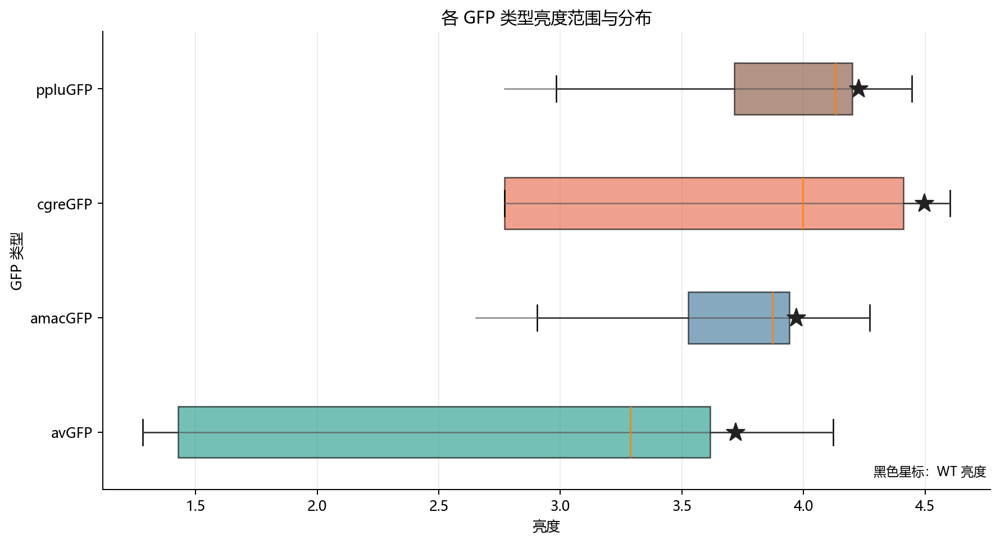
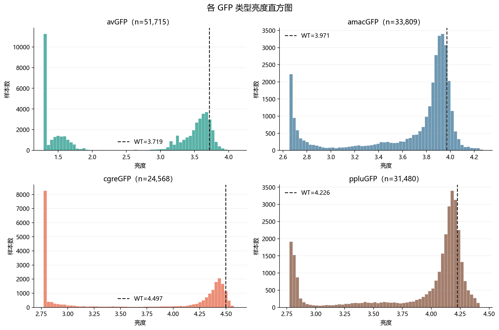
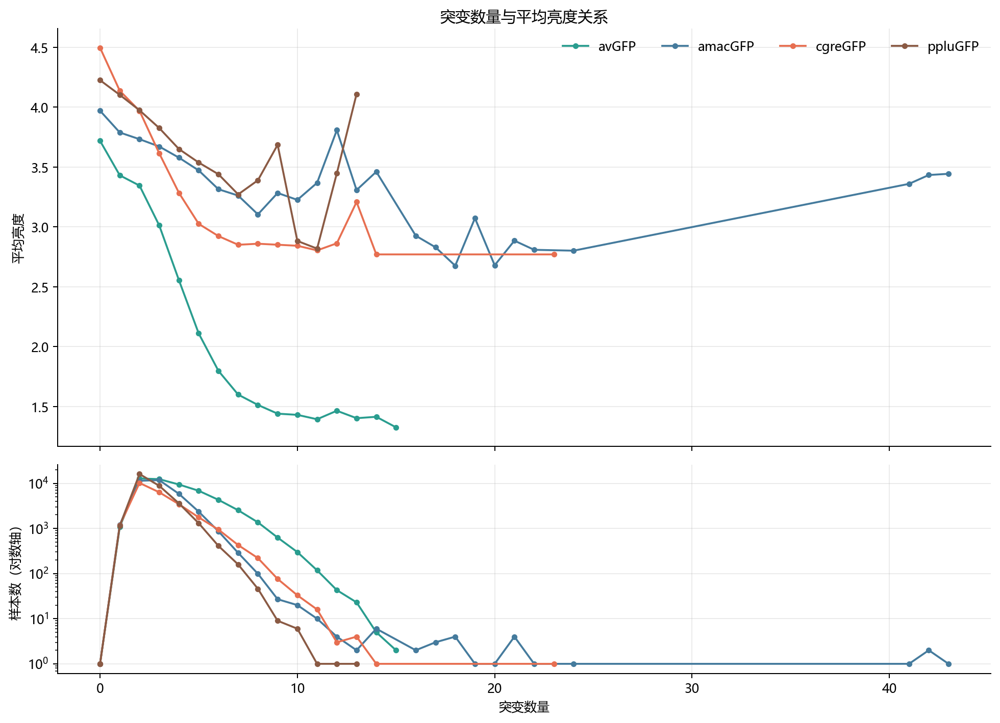
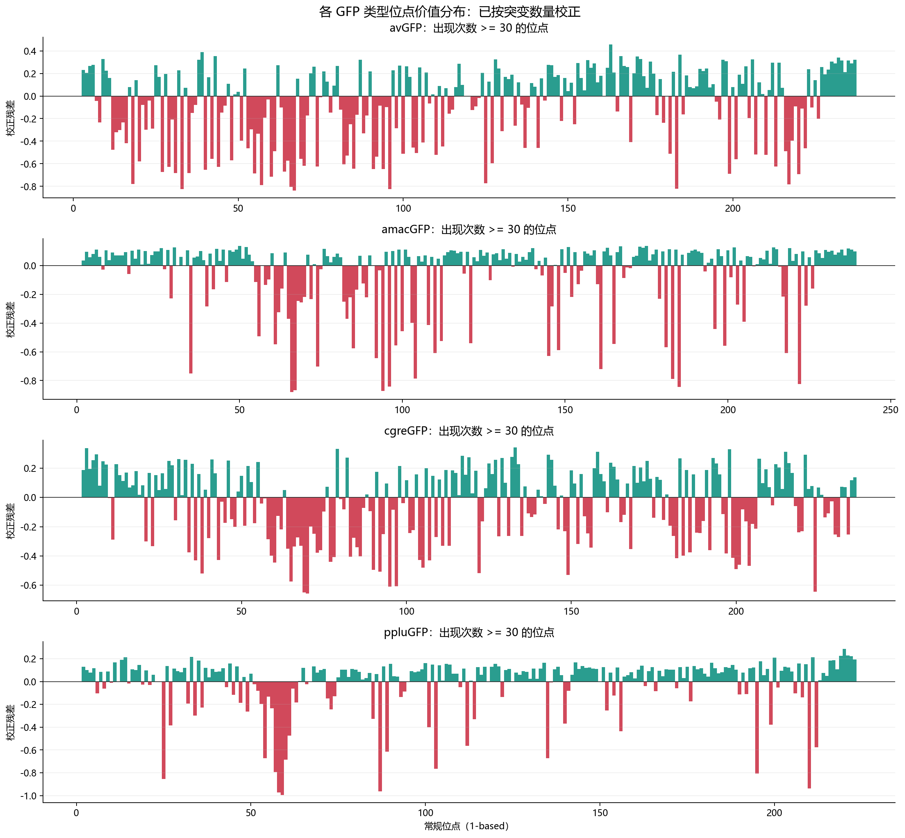
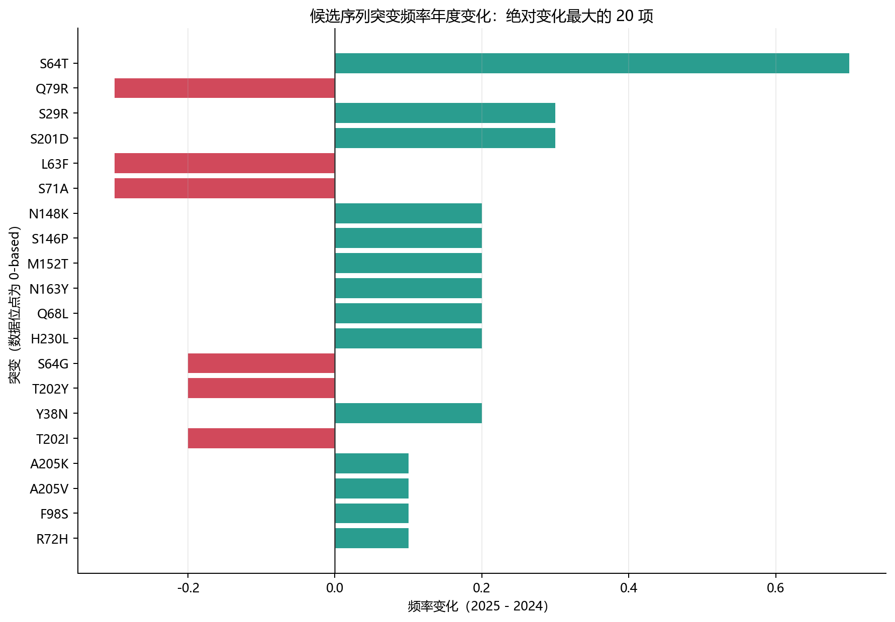

完整明细见 GFP综合分析结果.xlsx。报告中的高价值和低价值位点基于关联分析，用于候选筛选和实验优先级排序，不代表已经证明的因果关系。
brightness 中的突变位置采用 0-based 编号，例如 A109D 对应参考序列第 110 位。avGFP 参考序列比较，同时保留相对 2024 年首条序列的临时参考差异。| GFP类型 | 样本数量 | WT亮度 | 最小亮度 | 最大亮度 | 亮度范围 | 平均亮度 | 亮度中位数 | 亮度标准差 | 疑似检测下限数量 | 疑似检测下限比例 | 高于WT数量 | 高于WT比例 | 突变数量中位数 | 突变数量最大值 |
|---|---|---|---|---|---|---|---|---|---|---|---|---|---|---|
| avGFP | 51715 | 3.7192 | 1.2834 | 4.1231 | 2.8397 | 2.6579 | 3.2873 | 1.0586 | 7359 | 0.1423 | 5031 | 0.0973 | 3.0000 | 15 |
| amacGFP | 33809 | 3.9707 | 2.6522 | 4.2716 | 1.6193 | 3.6513 | 3.8715 | 0.4531 | 0 | 0.0000 | 5088 | 0.1505 | 3.0000 | 43 |
| cgreGFP | 24568 | 4.4969 | 2.7709 | 4.6030 | 1.8322 | 3.6478 | 3.9971 | 0.7698 | 0 | 0.0000 | 1068 | 0.0435 | 3.0000 | 23 |
| ppluGFP | 31480 | 4.2258 | 2.7709 | 4.4451 | 1.6742 | 3.8712 | 4.1313 | 0.5166 | 0 | 0.0000 | 5222 | 0.1659 | 2.0000 | 13 |
| 检查项 | 结果 | 说明 |
|---|---|---|
| brightness 数据行数 | 141572 | 不含表头 |
| beforetopseqs 数据行数 | 20 | 不含表头 |
| brightness 缺失值数量 | 0 | 三个原始字段 |
| beforetopseqs 缺失值数量 | 0 | 两个原始字段 |
| brightness 完全重复行 | 0 | 预期为 0 |
| 类型内重复突变组合 | 0 | 预期为 0 |
| 候选序列完全重复行 | 0 | 预期为 0 |
| 疑似检测下限记录 | 7359 | 亮度 <= 1.30104 |
| 最大突变数量 | 43 | 用于识别极端多点突变 |
| 解析失败的突变 token | 0 | 支持普通突变及 *238G 一类终止位点替换 |
| 终止位点替换 token | 428 | 保留为特殊突变 |
| 按 0-based 编号无法匹配参考序列的普通 token | 0 | 数据位点 0 对应参考序列第 1 位；预期为 0 |
| 候选序列长度集合 | 238 | 候选序列应保持相同长度 |
| 候选序列非法字符 | 无 | 仅允许标准 20 种氨基酸 |
| avGFP 参考序列长度 | 238 | 来自 AAseqs of 5 GFP proteins.txt |
| amacGFP 参考序列长度 | 238 | 来自 AAseqs of 5 GFP proteins.txt |
| cgreGFP 参考序列长度 | 235 | 来自 AAseqs of 5 GFP proteins.txt |
| ppluGFP 参考序列长度 | 222 | 来自 AAseqs of 5 GFP proteins.txt |
全类型位点按各参考序列的常规编号合并，用于跨 GFP 类型趋势筛选；不同 GFP 的同一编号不保证是严格结构同源位点。
| 常规位点_1based | 覆盖GFP类型数 | 覆盖GFP类型 | 总出现次数 | 平均校正后残差_类型等权 | 中位校正后残差_类型等权 | 高价值类型数 | 低价值类型数 | amacGFP | avGFP | cgreGFP | ppluGFP | 跨类型价值分类 |
|---|---|---|---|---|---|---|---|---|---|---|---|---|
| 237 | 2 | amacGFP,avGFP | 1452 | 0.2199 | 0.2199 | 2 | 0 | 0.1193 | 0.3204 | NaN | NaN | 跨类型高价值 |
| 198 | 4 | amacGFP,avGFP,cgreGFP,ppluGFP | 3329 | 0.2032 | 0.2089 | 4 | 0 | 0.0656 | 0.3069 | 0.3295 | 0.1110 | 跨类型高价值 |
| 117 | 4 | amacGFP,avGFP,cgreGFP,ppluGFP | 2681 | 0.1963 | 0.2069 | 4 | 0 | 0.0851 | 0.2864 | 0.2845 | 0.1293 | 跨类型高价值 |
| 3 | 4 | amacGFP,avGFP,cgreGFP,ppluGFP | 2401 | 0.1912 | 0.1651 | 4 | 0 | 0.0967 | 0.2303 | 0.3381 | 0.0999 | 跨类型高价值 |
| 9 | 4 | amacGFP,avGFP,cgreGFP,ppluGFP | 2399 | 0.1864 | 0.1653 | 4 | 0 | 0.1062 | 0.3273 | 0.2243 | 0.0880 | 跨类型高价值 |
| 133 | 4 | amacGFP,avGFP,cgreGFP,ppluGFP | 2186 | 0.1834 | 0.1510 | 4 | 0 | 0.0890 | 0.1885 | 0.3426 | 0.1135 | 跨类型高价值 |
| 158 | 4 | amacGFP,avGFP,cgreGFP,ppluGFP | 3120 | 0.1818 | 0.1797 | 4 | 0 | 0.0698 | 0.2897 | 0.3125 | 0.0552 | 跨类型高价值 |
| 162 | 4 | amacGFP,avGFP,cgreGFP,ppluGFP | 2911 | 0.1813 | 0.1878 | 4 | 0 | 0.0990 | 0.2505 | 0.2379 | 0.1377 | 跨类型高价值 |
| 235 | 3 | amacGFP,avGFP,cgreGFP | 1737 | 0.1800 | 0.1167 | 3 | 0 | 0.1100 | 0.3134 | 0.1167 | NaN | 跨类型高价值 |
| 171 | 4 | amacGFP,avGFP,cgreGFP,ppluGFP | 3021 | 0.1795 | 0.1538 | 4 | 0 | 0.0610 | 0.3492 | 0.2050 | 0.1027 | 跨类型高价值 |
| 5 | 4 | amacGFP,avGFP,cgreGFP,ppluGFP | 2353 | 0.1793 | 0.1855 | 4 | 0 | 0.0810 | 0.2651 | 0.2549 | 0.1162 | 跨类型高价值 |
| 144 | 4 | amacGFP,avGFP,cgreGFP,ppluGFP | 3262 | 0.1745 | 0.1829 | 4 | 0 | 0.0546 | 0.2776 | 0.2569 | 0.1089 | 跨类型高价值 |
| 232 | 3 | amacGFP,avGFP,cgreGFP | 1328 | 0.1723 | 0.1029 | 3 | 0 | 0.1029 | 0.3418 | 0.0721 | NaN | 跨类型高价值 |
| 129 | 4 | amacGFP,avGFP,cgreGFP,ppluGFP | 2001 | 0.1716 | 0.1649 | 4 | 0 | 0.0865 | 0.2432 | 0.2709 | 0.0859 | 跨类型高价值 |
| 173 | 4 | amacGFP,avGFP,cgreGFP,ppluGFP | 2361 | 0.1712 | 0.1537 | 4 | 0 | 0.1307 | 0.1767 | 0.2495 | 0.1277 | 跨类型高价值 |
| 28 | 4 | amacGFP,avGFP,cgreGFP,ppluGFP | 2720 | 0.1674 | 0.1559 | 4 | 0 | 0.1073 | 0.1969 | 0.2507 | 0.1149 | 跨类型高价值 |
| 236 | 3 | amacGFP,avGFP,cgreGFP | 1366 | 0.1657 | 0.1376 | 3 | 0 | 0.0710 | 0.2887 | 0.1376 | NaN | 跨类型高价值 |
| 153 | 4 | amacGFP,avGFP,cgreGFP,ppluGFP | 3148 | 0.1563 | 0.1265 | 4 | 0 | 0.0926 | 0.2926 | 0.1605 | 0.0796 | 跨类型高价值 |
| 233 | 3 | amacGFP,avGFP,cgreGFP | 3184 | 0.1533 | 0.0741 | 3 | 0 | 0.0741 | 0.3147 | 0.0711 | NaN | 跨类型高价值 |
| 223 | 4 | amacGFP,avGFP,cgreGFP,ppluGFP | 2488 | 0.1518 | 0.1463 | 4 | 0 | 0.0991 | 0.2358 | 0.0787 | 0.1934 | 跨类型高价值 |
| 常规位点_1based | 覆盖GFP类型数 | 覆盖GFP类型 | 总出现次数 | 平均校正后残差_类型等权 | 中位校正后残差_类型等权 | 高价值类型数 | 低价值类型数 | amacGFP | avGFP | cgreGFP | ppluGFP | 跨类型价值分类 |
|---|---|---|---|---|---|---|---|---|---|---|---|---|
| 57 | 3 | avGFP,cgreGFP,ppluGFP | 1105 | -0.5299 | -0.7889 | 0 | 2 | NaN | -0.7889 | -0.0075 | -0.7932 | 跨类型低价值 |
| 66 | 4 | amacGFP,avGFP,cgreGFP,ppluGFP | 1732 | -0.5115 | -0.5706 | 0 | 3 | -0.8807 | -0.8049 | -0.3363 | -0.0243 | 跨类型低价值 |
| 199 | 4 | amacGFP,avGFP,cgreGFP,ppluGFP | 1102 | -0.5095 | -0.4863 | 0 | 4 | -0.5593 | -0.6884 | -0.4133 | -0.3771 | 跨类型低价值 |
| 67 | 4 | amacGFP,avGFP,cgreGFP,ppluGFP | 765 | -0.4957 | -0.5567 | 0 | 3 | -0.8660 | -0.8386 | -0.2747 | -0.0034 | 跨类型低价值 |
| 85 | 4 | amacGFP,avGFP,cgreGFP,ppluGFP | 1878 | -0.4713 | -0.4582 | 0 | 4 | -0.5746 | -0.6425 | -0.3418 | -0.3262 | 跨类型低价值 |
| 74 | 4 | amacGFP,avGFP,cgreGFP,ppluGFP | 1381 | -0.4548 | -0.4938 | 0 | 4 | -0.7016 | -0.6259 | -0.3618 | -0.1299 | 跨类型低价值 |
| 61 | 4 | amacGFP,avGFP,cgreGFP,ppluGFP | 1764 | -0.4087 | -0.4802 | 0 | 4 | -0.5478 | -0.4875 | -0.1267 | -0.4728 | 跨类型低价值 |
| 58 | 4 | amacGFP,avGFP,cgreGFP,ppluGFP | 1258 | -0.3968 | -0.2393 | 0 | 4 | -0.1355 | -0.1922 | -0.2864 | -0.9733 | 跨类型低价值 |
| 59 | 4 | amacGFP,avGFP,cgreGFP,ppluGFP | 1413 | -0.3802 | -0.2474 | 0 | 4 | -0.0960 | -0.0303 | -0.3989 | -0.9957 | 跨类型低价值 |
| 224 | 3 | amacGFP,avGFP,cgreGFP | 2055 | -0.3422 | -0.2788 | 0 | 3 | -0.2788 | -0.1017 | -0.6460 | NaN | 跨类型低价值 |
| 83 | 4 | amacGFP,avGFP,cgreGFP,ppluGFP | 2129 | -0.3193 | -0.3889 | 0 | 3 | -0.3718 | -0.5292 | -0.4060 | 0.0296 | 跨类型低价值 |
| 201 | 4 | amacGFP,avGFP,cgreGFP,ppluGFP | 1634 | -0.2881 | -0.2706 | 0 | 4 | -0.0818 | -0.5595 | -0.4594 | -0.0518 | 跨类型低价值 |
| 54 | 4 | amacGFP,avGFP,cgreGFP,ppluGFP | 830 | -0.2796 | -0.2368 | 0 | 3 | 0.0286 | -0.2968 | -0.1767 | -0.6733 | 跨类型低价值 |
| 89 | 4 | amacGFP,avGFP,cgreGFP,ppluGFP | 916 | -0.2762 | -0.1978 | 0 | 4 | -0.2223 | -0.1732 | -0.0938 | -0.6153 | 跨类型低价值 |
| 56 | 4 | amacGFP,avGFP,cgreGFP,ppluGFP | 851 | -0.2754 | -0.2849 | 0 | 4 | -0.4913 | -0.3355 | -0.0405 | -0.2343 | 跨类型低价值 |
| 152 | 4 | amacGFP,avGFP,cgreGFP,ppluGFP | 1562 | -0.2595 | -0.2513 | 0 | 4 | -0.2177 | -0.2503 | -0.3179 | -0.2523 | 跨类型低价值 |
| 141 | 4 | amacGFP,avGFP,cgreGFP,ppluGFP | 1244 | -0.1395 | -0.0534 | 0 | 2 | -0.0251 | -0.4597 | 0.0087 | -0.0818 | 跨类型低价值 |
| 93 | 4 | amacGFP,avGFP,cgreGFP,ppluGFP | 1835 | -0.1260 | -0.1107 | 0 | 4 | -0.0326 | -0.0850 | -0.2502 | -0.1363 | 跨类型低价值 |
| 226 | 3 | amacGFP,avGFP,cgreGFP | 803 | -0.1146 | -0.1591 | 0 | 2 | -0.1591 | -0.2020 | 0.0174 | NaN | 跨类型低价值 |
以下表格为每一种 GFP 类型内部单独计算的结果。
| GFP类型 | 数据位点_0based | 常规位点_1based | 出现次数 | 涉及替换种类 | 平均亮度 | 平均相对WT变化 | 平均校正后残差 | 校正后残差中位数 | 高于WT比例 | 价值可靠性 | 价值分类 |
|---|---|---|---|---|---|---|---|---|---|---|---|
| amacGFP | 49 | 50 | 387 | 6 | 3.7592 | -0.2116 | 0.1365 | 0.2371 | 0.2171 | 较可靠 | 高价值 |
| amacGFP | 174 | 175 | 394 | 8 | 3.7746 | -0.1961 | 0.1362 | 0.2716 | 0.4213 | 较可靠 | 高价值 |
| amacGFP | 166 | 167 | 294 | 8 | 3.7449 | -0.2258 | 0.1332 | 0.4869 | 0.5986 | 较可靠 | 高价值 |
| amacGFP | 172 | 173 | 197 | 6 | 3.7567 | -0.2141 | 0.1307 | 0.2189 | 0.1574 | 较可靠 | 高价值 |
| amacGFP | 150 | 151 | 502 | 7 | 3.7324 | -0.2383 | 0.1281 | 0.2466 | 0.1992 | 较可靠 | 高价值 |
| avGFP | 162 | 163 | 1095 | 6 | 2.8661 | -0.8532 | 0.4575 | 0.5341 | 0.1826 | 较可靠 | 高价值 |
| avGFP | 38 | 39 | 983 | 12 | 2.8360 | -0.8833 | 0.3889 | 0.4579 | 0.1790 | 较可靠 | 高价值 |
| avGFP | 183 | 184 | 914 | 8 | 2.7693 | -0.9499 | 0.3654 | 0.4239 | 0.1554 | 较可靠 | 高价值 |
| avGFP | 165 | 166 | 1541 | 13 | 2.7817 | -0.9375 | 0.3544 | 0.3994 | 0.1337 | 较可靠 | 高价值 |
| avGFP | 42 | 43 | 895 | 8 | 2.7884 | -0.9308 | 0.3541 | 0.4015 | 0.1453 | 较可靠 | 高价值 |
| cgreGFP | 132 | 133 | 279 | 5 | 3.8527 | -0.6442 | 0.3426 | 0.4628 | 0.0932 | 较可靠 | 高价值 |
| cgreGFP | 2 | 3 | 281 | 6 | 3.8952 | -0.6017 | 0.3381 | 0.4536 | 0.0819 | 较可靠 | 高价值 |
| cgreGFP | 78 | 79 | 396 | 8 | 3.8933 | -0.6037 | 0.3317 | 0.4674 | 0.0758 | 较可靠 | 高价值 |
| cgreGFP | 197 | 198 | 567 | 7 | 3.7972 | -0.6997 | 0.3295 | 0.4928 | 0.1376 | 较可靠 | 高价值 |
| cgreGFP | 157 | 158 | 558 | 9 | 3.8345 | -0.6624 | 0.3125 | 0.4539 | 0.0699 | 较可靠 | 高价值 |
| ppluGFP | 219 | 220 | 365 | 9 | 3.9944 | -0.2314 | 0.2863 | 0.3419 | 0.4110 | 较可靠 | 高价值 |
| ppluGFP | 220 | 221 | 696 | 9 | 3.9789 | -0.2469 | 0.2286 | 0.3102 | 0.3477 | 较可靠 | 高价值 |
| ppluGFP | 218 | 219 | 789 | 12 | 3.9866 | -0.2393 | 0.2249 | 0.2863 | 0.3004 | 较可靠 | 高价值 |
| ppluGFP | 221 | 222 | 496 | 13 | 3.9485 | -0.2773 | 0.2207 | 0.3009 | 0.3810 | 较可靠 | 高价值 |
| ppluGFP | 32 | 33 | 481 | 6 | 4.0259 | -0.1999 | 0.2164 | 0.3585 | 0.5738 | 较可靠 | 高价值 |
| GFP类型 | 数据位点_0based | 常规位点_1based | 出现次数 | 涉及替换种类 | 平均亮度 | 平均相对WT变化 | 平均校正后残差 | 校正后残差中位数 | 高于WT比例 | 价值可靠性 | 价值分类 |
|---|---|---|---|---|---|---|---|---|---|---|---|
| amacGFP | 65 | 66 | 459 | 6 | 2.7182 | -1.2526 | -0.8807 | -0.9265 | 0.0000 | 较可靠 | 低价值 |
| amacGFP | 93 | 94 | 210 | 5 | 2.7439 | -1.2268 | -0.8714 | -0.9460 | 0.0000 | 较可靠 | 低价值 |
| amacGFP | 66 | 67 | 164 | 6 | 2.7276 | -1.2431 | -0.8660 | -0.9259 | 0.0061 | 较可靠 | 低价值 |
| amacGFP | 184 | 185 | 567 | 9 | 2.7476 | -1.2231 | -0.8450 | -0.9043 | 0.0000 | 较可靠 | 低价值 |
| amacGFP | 95 | 96 | 476 | 7 | 2.7059 | -1.2648 | -0.8423 | -0.8858 | 0.0000 | 较可靠 | 低价值 |
| avGFP | 66 | 67 | 207 | 7 | 1.4155 | -2.3037 | -0.8386 | -0.8096 | 0.0000 | 较可靠 | 低价值 |
| avGFP | 95 | 96 | 250 | 6 | 1.4171 | -2.3021 | -0.8256 | -0.8015 | 0.0000 | 较可靠 | 低价值 |
| avGFP | 32 | 33 | 133 | 6 | 1.4489 | -2.2703 | -0.8232 | -0.8096 | 0.0000 | 较可靠 | 低价值 |
| avGFP | 182 | 183 | 576 | 6 | 1.4389 | -2.2803 | -0.8206 | -0.8096 | 0.0000 | 较可靠 | 低价值 |
| avGFP | 65 | 66 | 629 | 8 | 1.4253 | -2.2939 | -0.8049 | -0.8084 | 0.0000 | 较可靠 | 低价值 |
| cgreGFP | 69 | 70 | 222 | 6 | 2.8173 | -1.6796 | -0.6584 | -0.7192 | 0.0000 | 较可靠 | 低价值 |
| cgreGFP | 68 | 69 | 530 | 7 | 2.7972 | -1.6997 | -0.6492 | -0.5135 | 0.0000 | 较可靠 | 低价值 |
| cgreGFP | 223 | 224 | 346 | 7 | 2.8437 | -1.6532 | -0.6460 | -0.6588 | 0.0000 | 较可靠 | 低价值 |
| cgreGFP | 94 | 95 | 280 | 8 | 2.8244 | -1.6725 | -0.6099 | -0.5163 | 0.0000 | 较可靠 | 低价值 |
| cgreGFP | 96 | 97 | 811 | 7 | 2.8089 | -1.6880 | -0.6076 | -0.5135 | 0.0000 | 较可靠 | 低价值 |
| ppluGFP | 58 | 59 | 247 | 4 | 2.8256 | -1.4002 | -0.9957 | -1.0378 | 0.0000 | 较可靠 | 低价值 |
| ppluGFP | 57 | 58 | 584 | 6 | 2.8085 | -1.4173 | -0.9733 | -1.0188 | 0.0000 | 较可靠 | 低价值 |
| ppluGFP | 86 | 87 | 739 | 5 | 2.8146 | -1.4113 | -0.9626 | -1.0185 | 0.0000 | 较可靠 | 低价值 |
| ppluGFP | 209 | 210 | 724 | 10 | 2.8417 | -1.3841 | -0.9384 | -0.9994 | 0.0014 | 较可靠 | 低价值 |
| ppluGFP | 24 | 25 | 110 | 7 | 3.0043 | -1.2215 | -0.8547 | -0.9791 | 0.0000 | 较可靠 | 低价值 |
| GFP类型 | 突变 | 原始氨基酸 | 数据位点_0based | 常规位点_1based | 新氨基酸 | 亮度 | WT亮度 | 相对WT亮度变化 | 价值分类 |
|---|---|---|---|---|---|---|---|---|---|
| amacGFP | I166T | I | 166 | 167 | T | 4.2459 | 3.9707 | 0.2751 | 高价值 |
| amacGFP | I166V | I | 166 | 167 | V | 4.2101 | 3.9707 | 0.2394 | 高价值 |
| amacGFP | H168L | H | 168 | 169 | L | 4.1726 | 3.9707 | 0.2019 | 高价值 |
| amacGFP | F45C | F | 45 | 46 | C | 4.1706 | 3.9707 | 0.1998 | 高价值 |
| amacGFP | C202S | C | 202 | 203 | S | 4.1628 | 3.9707 | 0.1921 | 高价值 |
| avGFP | K157G | K | 157 | 158 | G | 4.1136 | 3.7192 | 0.3944 | 高价值 |
| avGFP | S174T | S | 174 | 175 | T | 4.0080 | 3.7192 | 0.2888 | 高价值 |
| avGFP | R72L | R | 72 | 73 | L | 3.9923 | 3.7192 | 0.2731 | 高价值 |
| avGFP | K157V | K | 157 | 158 | V | 3.9563 | 3.7192 | 0.2371 | 高价值 |
| avGFP | N143G | N | 143 | 144 | G | 3.9066 | 3.7192 | 0.1873 | 高价值 |
| ppluGFP | G206E | G | 206 | 207 | E | 4.3961 | 4.2258 | 0.1703 | 高价值 |
| ppluGFP | L199H | L | 199 | 200 | H | 4.3894 | 4.2258 | 0.1636 | 高价值 |
| ppluGFP | G206R | G | 206 | 207 | R | 4.3792 | 4.2258 | 0.1533 | 高价值 |
| ppluGFP | A221E | A | 221 | 222 | E | 4.3759 | 4.2258 | 0.1501 | 高价值 |
| ppluGFP | L199V | L | 199 | 200 | V | 4.3701 | 4.2258 | 0.1443 | 高价值 |
| GFP类型 | 突变 | 原始氨基酸 | 数据位点_0based | 常规位点_1based | 新氨基酸 | 亮度 | WT亮度 | 相对WT亮度变化 | 价值分类 |
|---|---|---|---|---|---|---|---|---|---|
| amacGFP | G109W | G | 109 | 110 | W | 2.6522 | 3.9707 | -1.3185 | 低价值 |
| amacGFP | V111M | V | 111 | 112 | M | 2.6522 | 3.9707 | -1.3185 | 低价值 |
| amacGFP | H216L | H | 216 | 217 | L | 2.6522 | 3.9707 | -1.3185 | 低价值 |
| amacGFP | G109D | G | 109 | 110 | D | 2.6530 | 3.9707 | -1.3177 | 低价值 |
| amacGFP | C202H | C | 202 | 203 | H | 2.6553 | 3.9707 | -1.3155 | 低价值 |
| avGFP | Y65F | Y | 65 | 66 | F | 1.2989 | 3.7192 | -2.4203 | 低价值 |
| avGFP | G66D | G | 66 | 67 | D | 1.3008 | 3.7192 | -2.4184 | 低价值 |
| avGFP | L17R | L | 17 | 18 | R | 1.3010 | 3.7192 | -2.4182 | 低价值 |
| avGFP | M87K | M | 87 | 88 | K | 1.3010 | 3.7192 | -2.4182 | 低价值 |
| avGFP | L52Q | L | 52 | 53 | Q | 1.3010 | 3.7192 | -2.4182 | 低价值 |
| cgreGFP | G33D | G | 33 | 34 | D | 2.7709 | 4.4969 | -1.7261 | 低价值 |
| cgreGFP | R96L | R | 96 | 97 | L | 2.7709 | 4.4969 | -1.7261 | 低价值 |
| cgreGFP | V141G | V | 141 | 142 | G | 2.7709 | 4.4969 | -1.7261 | 低价值 |
| cgreGFP | Y151D | Y | 151 | 152 | D | 2.7709 | 4.4969 | -1.7261 | 低价值 |
| cgreGFP | H148L | H | 148 | 149 | L | 2.7709 | 4.4969 | -1.7261 | 低价值 |
| ppluGFP | E209W | E | 209 | 210 | W | 2.7709 | 4.2258 | -1.4550 | 低价值 |
| ppluGFP | E209M | E | 209 | 210 | M | 2.7766 | 4.2258 | -1.4493 | 低价值 |
| ppluGFP | R194G | R | 194 | 195 | G | 2.7834 | 4.2258 | -1.4424 | 低价值 |
| ppluGFP | Y57S | Y | 57 | 58 | S | 2.7861 | 4.2258 | -1.4397 | 低价值 |
| ppluGFP | Y57F | Y | 57 | 58 | F | 2.7877 | 4.2258 | -1.4381 | 低价值 |
| GFP类型 | 训练样本数 | 测试样本数 | 特征数量 | 测试集MAE | 测试集R方 | 模型截距 | 说明 |
|---|---|---|---|---|---|---|---|
| avGFP | 41372 | 10343 | 1810 | 0.4680 | 0.6876 | 3.4949 | Ridge 加性基线模型；随机拆分；仅用于探索性评分，不等同于实验验证 |
| amacGFP | 27047 | 6762 | 1643 | 0.1553 | 0.7549 | 3.8098 | Ridge 加性基线模型；随机拆分；仅用于探索性评分，不等同于实验验证 |
| cgreGFP | 19654 | 4914 | 1657 | 0.4154 | 0.5986 | 4.0640 | Ridge 加性基线模型；随机拆分；仅用于探索性评分，不等同于实验验证 |
| ppluGFP | 25184 | 6296 | 1469 | 0.1468 | 0.8070 | 4.1257 | Ridge 加性基线模型；随机拆分；仅用于探索性评分，不等同于实验验证 |
| 候选序号 | 年份 | 序列长度 | 相对avGFP参考突变数 | 相对avGFP参考突变 | 相对2024首条序列差异数 | 相对2024首条序列差异 | avGFP线性模型预测亮度 | 已知关联突变数量 | 关联残差分数合计 |
|---|---|---|---|---|---|---|---|---|---|
| 10 | 2024 | 238 | 5 | N104S:K157G:V162A:I170V:T202Y | 6 | I68V:N105S:K158G:V163A:I171V:I203Y | 3.9990 | 4 | 1.8217 |
| 12 | 2025 | 238 | 6 | S29R:Y38N:S64T:V162A:S201D:A205V | 8 | S30R:Y39N:S65T:I68V:V163A:S202D:I203T:A206V | 3.6997 | 5 | 1.6220 |
| 7 | 2024 | 238 | 4 | L63F:S71A:Q79R:T202I | 4 | L64F:I68V:S72A:Q80R | 3.6068 | 2 | 0.8169 |
| 1 | 2024 | 238 | 2 | V67I:T202I | 0 | WT | 3.5797 | 1 | 0.5138 |
| 16 | 2025 | 238 | 6 | S29R:S64C:S71A:K78R:N104K:N148K | 8 | S30R:S65C:I68V:S72A:K79R:N105K:N149K:I203T | 3.5706 | 3 | 0.7743 |
| 2 | 2024 | 238 | 4 | S64C:S71A:K78R:N104K | 6 | S65C:I68V:S72A:K79R:N105K:I203T | 3.5363 | 2 | 0.5159 |
| 6 | 2024 | 238 | 4 | L63F:S64G:S71A:Q79R | 6 | L64F:S65G:I68V:S72A:Q80R:I203T | 3.5328 | 1 | 0.3030 |
| 5 | 2024 | 238 | 5 | L63F:S64G:S71A:Q79R:T202Y | 6 | L64F:S65G:I68V:S72A:Q80R:I203Y | 3.5328 | 1 | 0.3030 |
| 3 | 2024 | 238 | 5 | I46V:Q68K:S71A:V92I:N104Q | 7 | I47V:I68V:Q69K:S72A:V93I:N105Q:I203T | 3.5316 | 3 | 0.2622 |
| 18 | 2025 | 238 | 1 | Q68M | 3 | I68V:Q69M:I203T | 3.5058 | 0 | 0.0000 |
| 17 | 2025 | 238 | 4 | S29R:Y38N:S64T:I170V | 6 | S30R:Y39N:S65T:I68V:I171V:I203T | 3.4720 | 3 | 0.8673 |
| 15 | 2025 | 238 | 6 | S64T:F98S:S146P:M152T:V162A:S201D | 8 | S65T:I68V:F99S:S147P:M153T:V163A:S202D:I203T | 3.4595 | 5 | 1.3699 |
| 8 | 2024 | 238 | 2 | S64T:V162A | 4 | S65T:I68V:V163A:I203T | 3.4197 | 2 | 0.5081 |
| 20 | 2025 | 238 | 5 | T37S:S64T:R72H:Q79R:N104T | 7 | T38S:S65T:I68V:R73H:Q80R:N105T:I203T | 3.3880 | 5 | 1.3582 |
| 9 | 2024 | 238 | 4 | L63M:Y150H:I166T:L177V | 6 | L64M:I68V:Y151H:I167T:L178V:I203T | 3.3196 | 4 | 0.9024 |
| 4 | 2024 | 238 | 6 | Y38L:V60I:T62S:S64A:S71A:Q79R | 8 | Y39L:V61I:T63S:S65A:I68V:S72A:Q80R:I203T | 3.3017 | 5 | 0.1903 |
| 14 | 2025 | 238 | 6 | S64T:S71A:N148K:M152T:I166T:H230L | 8 | S65T:I68V:S72A:N149K:M153T:I167T:I203T:H231L | 3.2876 | 5 | 1.1596 |
| 19 | 2025 | 238 | 2 | S29Q:S64T | 4 | S30Q:S65T:I68V:I203T | 3.1703 | 1 | -0.0839 |
| 11 | 2025 | 238 | 6 | S64T:Q68L:S146P:V162A:N163Y:S201D | 8 | S65T:I68V:Q69L:S147P:V163A:N164Y:S202D:I203T | 3.0768 | 5 | 0.9168 |
| 13 | 2025 | 238 | 6 | S64T:Q68L:S71A:N163Y:A205K:H230L | 8 | S65T:I68V:Q69L:S72A:N164Y:I203T:A206K:H231L | 2.7978 | 4 | 0.3050 |





每种 GFP 的单点突变效应图和单点突变替换效应热图位于 图表 目录。